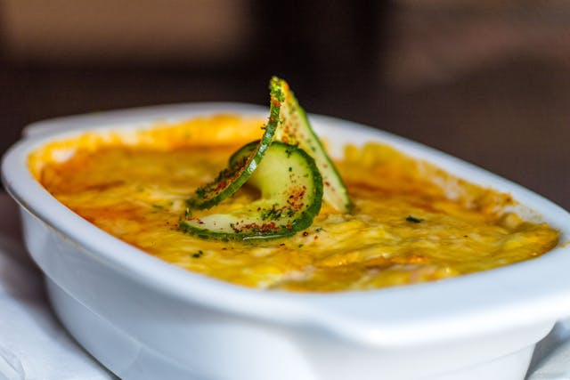

Lasagna recipe

This is one of the better lasagna recipes you'll ever try!
This has to be one of my favourite recipes I've found in
the past year! This is the recipe which will make everyone love
you no matter what.
And it's so easy to make too. There is no hassle of processing stuff, just
put these ready ingredients together and toss them into the oven!
Ingredients
- Lasagne pasta sheets (500g)
- Ground beef, 15-20%, 400g
- Tomato sauce (barilla, 500ml)
- Dolmio white sauce (500g)
- Mozzarella (2 balls)
- Parmigiano cheese (150g)
- Spices
Steps
- Cook the ground beef on a pan and add salt and pepper
- Add a layer of tomato sauce to the bottom of a baking dish
-
Add alternating sheets of white sauce and tomato sauce while mixin in
the ground beef
-
When all the sauce is used, top it off with mozzarella and Parmigiano
- Bake in 180 C for 45-55 minutes in the middle level of the oven
- Enjoy the easy and delicious lasagna!